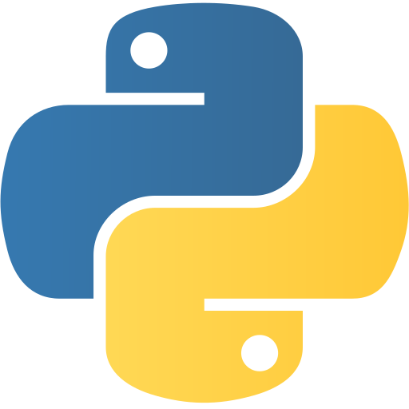
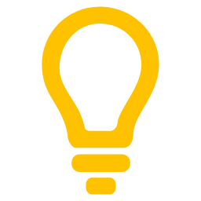
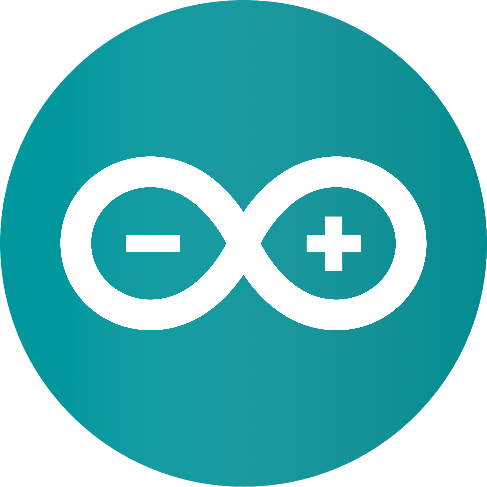
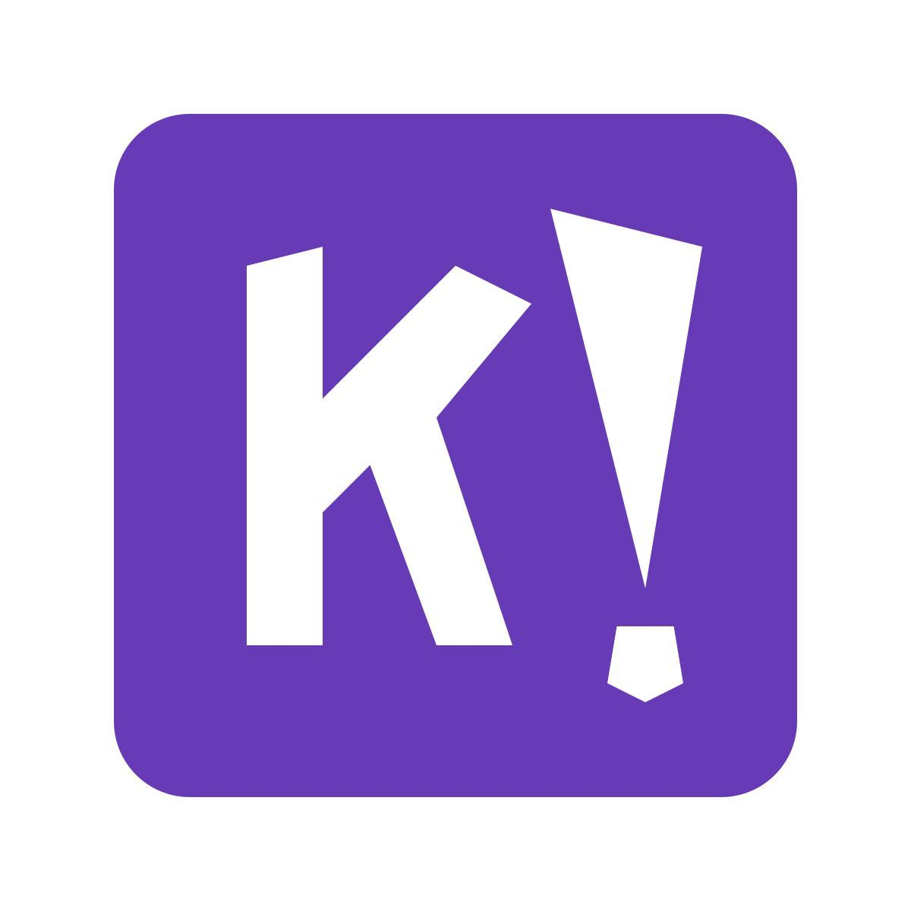
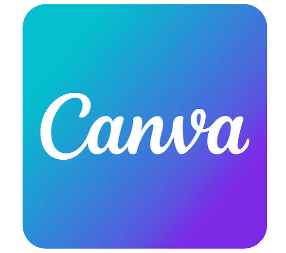
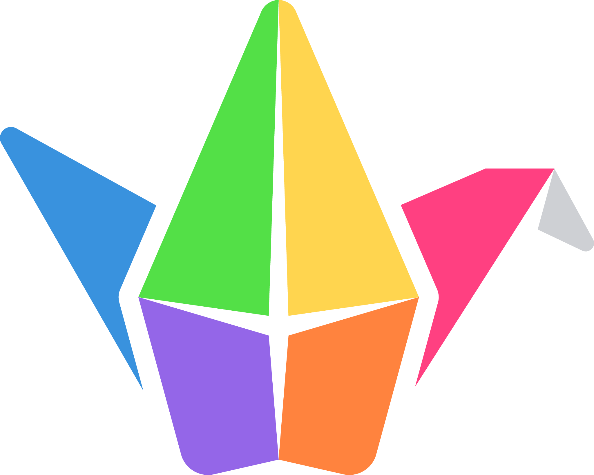

A incorporação de tecnologias digitais ao ensino médio integrado exige mais do que a adoção de ferramentas: requer planejamento pedagógico, intencionalidade didática e estratégias de acompanhamento da aprendizagem.
No campo da educação profissional, esse desafio se torna ainda mais relevante, pois os estudantes precisam relacionar conteúdos conceituais a situações práticas, resolver problemas e desenvolver competências alinhadas ao mundo do trabalho.
Nessa perspectiva, o uso de ambientes virtuais pode favorecer a organização das atividades, a ampliação do acesso aos materiais e o fortalecimento do protagonismo estudantil.
A proposta surgiu da necessidade de centralizar conteúdos, tarefas e registros da disciplina, ao mesmo tempo em que buscava tornar o processo de aprendizagem mais dinâmico, participativo e conectado à produção de projetos.
A dispersão de materiais e atividades, que dificultava o acompanhamento sistemático do percurso dos estudantes.
A necessidade de transformar conteúdos de Segurança da Informação em experiências mais significativas e aplicadas.
Analisar as contribuições do Google Classroom, integrado a outras ferramentas digitais, para o desempenho, o engajamento, a produção de projetos e o desenvolvimento do protagonismo estudantil.
A escolha da plataforma encontra respaldo em estudos que destacam sua acessibilidade, facilidade de uso e potencial de mediação da aprendizagem.
A eficácia do uso pedagógico de tecnologias depende da forma como elas são implementadas, integradas aos objetivos do componente e articuladas às práticas avaliativas.
O foco deste artigo não está apenas na ferramenta em si, mas no percurso metodológico construído a partir dela.
A investigação caracteriza-se como uma intervenção pedagógica de natureza aplicada, com abordagem predominantemente qualitativa e apoio de dados quantitativos descritivos.
Para efeito de comparação descritiva do desempenho, também foram utilizados registros consolidados de 2022.

Python
Portugol
Arduino IDE
Kahoot
Canva
PadletA convergência tecnológica reorganiza os processos educativos, desde que a mediação pedagógica preserve intencionalidade e sentido formativo.
A plataforma tende a ser bem aceita pelos estudantes, mas seu impacto não é automático: depende de como é integrada às estratégias de ensino.
O monitoramento dos registros de aprendizagem ajuda a identificar padrões de participação, dificuldades e avanços dos estudantes.
Protagonismo estudantil: a capacidade do aluno de participar ativamente do processo formativo, tomar decisões, produzir soluções e comunicar conhecimentos.
CHAN, Ka Ian; LEI, Filipe IS; PANG, Patrick Cheong-Iao. Uma revisão da literatura sobre mineração de dados educacionais com dados do ensino médio. In: Anais da 9ª Conferência Internacional sobre Tecnologias de Educação e Treinamento. 2023. p. 1-7.
GODOY, Arilda Schmidt. Pesquisa qualitativa: tipos fundamentais. Revista de Administração de Empresas, v. 35, p. 20-29, 1995.
JAKKAEW, Prasara; HEMRUNGROTE, Sirichai. The use of UTAUT2 model for understanding student perceptions using Google Classroom: a case study of introduction to information technology course. In: 2017 International Conference on Digital Arts, Media and Technology (ICDAMT). IEEE, 2017. p. 205-209.
KOEDINGER, Ken et al. Repositórios de dados educacionais e ferramentas de análise baseados na comunidade. In: Anais da sétima conferência internacional de análise e conhecimento de aprendizagem. 2017. p. 524.
MORAN, José Manuel. A integração das tecnologias na educação. Salto para o Futuro, v. 204, p. 63-91, 2005.
NOBRE, Alena Pimentel Mello Cabral; RODRIGUES, Cleyton Mário de Oliveira. Experiências da formação do docente do ensino superior no Google Classroom em tempos da pandemia da Covid-19. In: Anais do XXVI Workshop de Informática na Escola. SBC, 2020. p. 339-348.
SAINI, Mukesh Kumar; GOEL, Neeraj. How smart are smart classrooms? A review of smart classroom technologies. ACM Computing Surveys, v. 52, n. 6, p. 1-28, 2019.